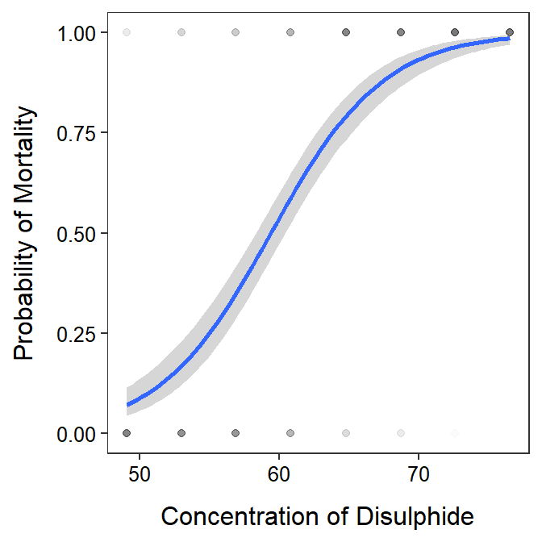

Module 27 Analysis
Modules 25 and 26 described the basics of fitting a logistic regression and understanding the meanings of the parameter estimates, predicted probabilities, and predicted values of the explanatory variable for a given probability. This module will demonstrate how to perform those analyses using R.
27.1 Data Preparation
Bliss (1935), in a classic study, examined the mortality response of beetles to various concentrations of gaseous carbon disulphide (mg/liter). The concentration and whether or not the beetle survived the exposure to that concentration was recorded for each beetle in Bliss.csv (data, meta). These data are loaded and briefly examined below.
bliss <- read.csv("https://raw.githubusercontent.com/droglenc/NCData/master/Bliss.csv")
str(bliss)#R> 'data.frame': 481 obs. of 2 variables:
#R> $ outcome: chr "dead" "dead" "dead" "dead" ...
#R> $ conc : num 49.1 49.1 49.1 49.1 49.1 49.1 49.1 49.1 49.1 49.1 ...In this case, we want to model the probability of mortality (i.e., the beetle died) as a function of the concentration of gaseous carbon disulphide. With this objective, a “success” is a “dead” beetle. Thus, “dead” should be coded as “1” and “not dead” (i.e., “alive”) as a “0.” You will recognize this as an indicator variable from Module 20. In contrast to when we used indicator variables for factors, we need to explicitly create the indicator variable here when it is used as a response variable.
An indicator variable can be created with ifelse(), which takes a “condition” as its first argument, what should be returned if the condition is “yes” as the second argument, and what should be returned if the condition is “no” as the third argument. The code below creates a new outcome01 variable in the bliss data frame that will be 1 if outcome is dead and 0 if outcome is not dead.100
bliss$outcome01 <- ifelse(bliss$outcome=="dead",1,0)You should examine the new variable to make sure that it represents what you intended.
head(bliss,n=8)#R> outcome conc outcome01
#R> 1 dead 49.1 1
#R> 2 dead 49.1 1
#R> 3 dead 49.1 1
#R> 4 dead 49.1 1
#R> 5 dead 49.1 1
#R> 6 dead 49.1 1
#R> 7 alive 49.1 0
#R> 8 alive 49.1 0The binary response variable must be explicitly converted to an indicator variable with ifelse() for constructing a logistic regression and plotting the results in R.
27.2 Fitting the Model
The logistic regression model is fit with glm(), which is the generalized linear model function in R. The first argument to glm() is a formula of the form var01~qvar where var01 is the indicator response variable created above and qvar is the quantitative explanatory variable, the data frame that contains these variables is in data=, and family=binomial. The family=binomial argument is critical because that is what tells glm() that the response variable should be treated as an indicator rather than quantitative variable. This signals glm() to fit a logistic regression model. The results of glm() should be saved to an object.
glm.bliss <- glm(outcome01~conc,data=bliss,family=binomial)Logistic regressions are fit in R with glm() rather than lm() because logistic regression is a generalized rather than a general linear model.
27.3 Parameter Estimates
The estimated intercept and slope are extracted from the glm() object with coef().
Confidence intervals constructed from bootstrap samples require bootstrap samples to be constructed first. There are many ways to construct bootstrap samples in R. We will use Boot() from the car package. This function will be called with car::Boot() so as to not have to load the whole car package. Boot() requires only the saved glm() object as its argument.101 The results of car::Boot() should be saved to an object.102
boot.bliss <- car::Boot(glm.bliss)The bootstrap confidence intervals for the intercept and slope are extracted from the Boot() object with confint(). Include type="perc" to perform the last step of the bootstrap steps shown in Section 26.5.
As before, I like to combine the parameter estimates and confidence intervals into one presentation.
cbind(Ests=coef(glm.bliss),confint(boot.bliss,type="perc"))#R> Ests 2.5 % 97.5 %
#R> (Intercept) -14.8229985 -17.6159611 -12.5704693
#R> conc 0.2494156 0.2126906 0.296759827.4 Predictions
27.4.1 Functions for Bootstrapping
The bootstrap method was introduced in Section 26.5 as a way to estimate reliable confidence intervals for predicted probabilities and values of the explanatory variable for a given probability. Applying the bootstrap method for derived metrics like these requires specific functions to calculate the predicted probability for a given value of \(X\) and the value of \(X\) for a given probability. The predProb() below is the R version of
\[ p = \frac{e^{\alpha+\beta X}}{1+e^{\alpha+\beta X}} \]
from Module 25 and predX() below is the R version of
\[ X = \frac{log\left(\frac{p}{1-p}\right)-\alpha}{\beta} \]
from Module 26.
predProb <- function(x,alpha,beta) exp(alpha+beta*x)/(1+exp(alpha+beta*x))
predX <- function(p,alpha,beta) (log(p/(1-p))-alpha)/betaCopy the code for predProb() and predX() as shown above directly into the beginning of your logistic regression script.
27.4.2 Predictions
The predicted log odds of mortality given a value of the concentration of calcium disulphide is found with predict(), similar to what was shown in previous modules. For example, the code below finds the log odds of mortality for a concentration of 70 mg/liter.
nd <- data.frame(conc=70)
predict(glm.bliss,newdata=nd)#R> 1
#R> 2.636094The probability, rather than log odds, can be found by including type=response in predict().
predict(glm.bliss,newdata=nd,type="response")#R> 1
#R> 0.9331487Unfortunately, confidence intervals for this prediction can not be constructed with predict(). Bootstrap confidence intervals, however, can be constructed using predProb() and the data frame of bootstrapped intercepts and slopes saved earlier. This is a bit of work so, lets work through this step-by-step.
First, the boostrapped data is in the t object of the Boot object saved above.
head(boot.bliss$t)#R> (Intercept) conc
#R> [1,] -14.49102 0.2451659
#R> [2,] -15.52964 0.2605145
#R> [3,] -16.45376 0.2746857
#R> [4,] -14.58048 0.2469224
#R> [5,] -15.27241 0.2567067
#R> [6,] -15.56794 0.2617828The intercepts are in the first column and the slopes are in the second. For example, you could see just the vector of slopes with boot.bliss$t[,2] (rounded below to save space)
round(boot.bliss$t[,2],2)#R> [1] 0.25 0.26 0.27 0.25 0.26 0.26 0.27 0.24 0.25 0.24 0.28 0.23 0.26 0.24 0.23
#R> [16] 0.26 0.26 0.25 0.24 0.26 0.26 0.24 0.23 0.24 0.25 0.25 0.21 0.25 0.26 0.29
#R> [31] 0.27 0.25 0.22 0.22 0.24 0.29 0.28 0.24 0.21 0.28 0.26 0.24 0.28 0.26 0.25
#R> [46] 0.24 0.28 0.23 0.27 0.22 0.26 0.26 0.27 0.22 0.23 0.23 0.23 0.26 0.25 0.26
#R> [61] 0.24 0.24 0.26 0.25 0.21 0.25 0.28 0.22 0.23 0.27 0.25 0.23 0.26 0.26 0.25
#R> [76] 0.23 0.27 0.24 0.25 0.24 0.24 0.26 0.26 0.26 0.27 0.24 0.28 0.26 0.25 0.25
#R> [91] 0.23 0.24 0.21 0.24 0.25 0.24 0.25 0.26 0.23 0.23 0.27 0.26 0.25 0.24 0.26
#R> [106] 0.23 0.26 0.24 0.27 0.26 0.27 0.25 0.26 0.25 0.26 0.26 0.23 0.23 0.30 0.27
#R> [121] 0.24 0.23 0.23 0.24 0.28 0.26 0.24 0.25 0.24 0.25 0.25 0.26 0.26 0.22 0.25
#R> [136] 0.24 0.25 0.23 0.22 0.26 0.24 0.24 0.27 0.25 0.24 0.26 0.24 0.27 0.28 0.25
#R> [151] 0.30 0.25 0.26 0.22 0.27 0.21 0.30 0.29 0.23 0.25 0.25 0.26 0.23 0.26 0.22
#R> [166] 0.26 0.28 0.24 0.25 0.27 0.25 0.30 0.25 0.25 0.24 0.26 0.28 0.30 0.27 0.23
#R> [181] 0.29 0.26 0.24 0.24 0.24 0.23 0.22 0.26 0.21 0.25 0.26 0.28 0.27 0.23 0.27
#R> [196] 0.23 0.24 0.22 0.30 0.24 0.29 0.25 0.25 0.27 0.22 0.25 0.25 0.24 0.26 0.28
#R> [211] 0.26 0.34 0.26 0.27 0.25 0.22 0.23 0.27 0.23 0.24 0.26 0.24 0.23 0.22 0.18
#R> [226] 0.28 0.27 0.25 0.27 0.26 0.26 0.24 0.27 0.26 0.25 0.21 0.26 0.24 0.23 0.20
#R> [241] 0.27 0.25 0.21 0.21 0.25 0.24 0.22 0.25 0.23 0.26 0.19 0.23 0.25 0.25 0.27
#R> [256] 0.26 0.27 0.24 0.29 0.26 0.23 0.27 0.26 0.26 0.24 0.24 0.23 0.33 0.25 0.27
#R> [271] 0.22 0.21 0.27 0.20 0.23 0.25 0.30 0.27 0.30 0.24 0.22 0.23 0.22 0.29 0.25
#R> [286] 0.24 0.28 0.24 0.25 0.26 0.25 0.26 0.26 0.27 0.25 0.23 0.23 0.24 0.29 0.25
#R> [301] 0.28 0.27 0.23 0.22 0.25 0.27 0.26 0.25 0.26 0.26 0.23 0.28 0.25 0.25 0.26
#R> [316] 0.26 0.25 0.26 0.27 0.23 0.28 0.29 0.26 0.27 0.24 0.25 0.28 0.30 0.24 0.30
#R> [331] 0.28 0.23 0.27 0.26 0.25 0.27 0.27 0.26 0.23 0.28 0.25 0.24 0.24 0.26 0.25
#R> [346] 0.22 0.25 0.23 0.24 0.24 0.25 0.28 0.25 0.28 0.21 0.23 0.24 0.25 0.24 0.26
#R> [361] 0.27 0.26 0.25 0.24 0.24 0.32 0.23 0.26 0.24 0.26 0.23 0.25 0.23 0.30 0.24
#R> [376] 0.24 0.22 0.23 0.29 0.30 0.25 0.29 0.24 0.24 0.25 0.23 0.30 0.26 0.24 0.24
#R> [391] 0.22 0.24 0.24 0.24 0.23 0.26 0.25 0.25 0.24 0.23 0.27 0.27 0.29 0.29 0.25
#R> [406] 0.26 0.27 0.24 0.22 0.25 0.24 0.24 0.26 0.23 0.26 0.27 0.27 0.24 0.25 0.29
#R> [421] 0.24 0.24 0.26 0.22 0.26 0.26 0.28 0.22 0.27 0.23 0.22 0.25 0.23 0.29 0.25
#R> [436] 0.24 0.26 0.27 0.23 0.27 0.23 0.30 0.23 0.23 0.28 0.24 0.28 0.21 0.24 0.20
#R> [451] 0.24 0.22 0.24 0.27 0.27 0.26 0.26 0.27 0.25 0.28 0.24 0.26 0.26 0.27 0.25
#R> [466] 0.25 0.23 0.20 0.23 0.25 0.24 0.24 0.25 0.28 0.25 0.27 0.26 0.26 0.28 0.24
#R> [481] 0.26 0.25 0.26 0.24 0.27 0.24 0.28 0.24 0.24 0.27 0.22 0.27 0.25 0.25 0.23
#R> [496] 0.26 0.24 0.22 0.27 0.28 0.21 0.23 0.27 0.28 0.24 0.23 0.26 0.23 0.22 0.24
#R> [511] 0.24 0.23 0.29 0.24 0.26 0.26 0.27 0.25 0.25 0.24 0.25 0.26 0.29 0.23 0.28
#R> [526] 0.25 0.24 0.24 0.24 0.23 0.22 0.25 0.22 0.25 0.22 0.25 0.25 0.25 0.27 0.22
#R> [541] 0.28 0.26 0.28 0.25 0.24 0.28 0.25 0.25 0.24 0.25 0.26 0.27 0.23 0.23 0.24
#R> [556] 0.26 0.23 0.23 0.28 0.28 0.25 0.24 0.24 0.25 0.28 0.23 0.26 0.27 0.22 0.23
#R> [571] 0.26 0.23 0.22 0.23 0.25 0.23 0.25 0.26 0.30 0.24 0.22 0.26 0.25 0.25 0.24
#R> [586] 0.26 0.26 0.27 0.27 0.24 0.28 0.22 0.27 0.28 0.25 0.23 0.26 0.25 0.26 0.26
#R> [601] 0.26 0.26 0.25 0.26 0.23 0.25 0.26 0.27 0.28 0.23 0.27 0.24 0.25 0.25 0.29
#R> [616] 0.25 0.23 0.24 0.23 0.24 0.24 0.26 0.25 0.25 0.31 0.23 0.20 0.30 0.24 0.27
#R> [631] 0.24 0.26 0.23 0.29 0.26 0.25 0.25 0.26 0.22 0.24 0.26 0.24 0.23 0.26 0.27
#R> [646] 0.27 0.25 0.24 0.23 0.21 0.24 0.23 0.24 0.23 0.27 0.27 0.26 0.26 0.25 0.25
#R> [661] 0.27 0.23 0.26 0.22 0.25 0.24 0.24 0.26 0.26 0.28 0.21 0.26 0.25 0.24 0.29
#R> [676] 0.25 0.21 0.24 0.23 0.26 0.25 0.26 0.22 0.28 0.25 0.26 0.28 0.25 0.24 0.25
#R> [691] 0.30 0.29 0.27 0.22 0.27 0.26 0.25 0.22 0.28 0.24 0.22 0.24 0.22 0.27 0.29
#R> [706] 0.26 0.22 0.23 0.25 0.28 0.26 0.27 0.27 0.24 0.23 0.26 0.25 0.24 0.29 0.25
#R> [721] 0.22 0.28 0.28 0.27 0.26 0.24 0.25 0.27 0.27 0.23 0.26 0.25 0.21 0.26 0.24
#R> [736] 0.24 0.27 0.23 0.24 0.25 0.23 0.24 0.25 0.28 0.26 0.22 0.23 0.25 0.29 0.24
#R> [751] 0.26 0.26 0.25 0.22 0.22 0.25 0.21 0.28 0.25 0.23 0.24 0.26 0.26 0.25 0.26
#R> [766] 0.28 0.27 0.21 0.22 0.21 0.24 0.22 0.25 0.26 0.27 0.25 0.24 0.22 0.24 0.28
#R> [781] 0.26 0.25 0.29 0.27 0.26 0.23 0.26 0.28 0.24 0.24 0.22 0.24 0.25 0.25 0.24
#R> [796] 0.27 0.22 0.22 0.21 0.24 0.28 0.24 0.26 0.28 0.26 0.24 0.28 0.24 0.27 0.21
#R> [811] 0.26 0.28 0.26 0.28 0.25 0.25 0.27 0.28 0.24 0.22 0.25 0.25 0.23 0.25 0.24
#R> [826] 0.25 0.25 0.22 0.26 0.26 0.22 0.24 0.25 0.26 0.21 0.25 0.25 0.26 0.21 0.25
#R> [841] 0.23 0.22 0.24 0.21 0.24 0.27 0.29 0.27 0.22 0.26 0.24 0.25 0.22 0.27 0.23
#R> [856] 0.25 0.28 0.27 0.25 0.27 0.24 0.25 0.27 0.24 0.25 0.26 0.23 0.35 0.23 0.25
#R> [871] 0.24 0.22 0.26 0.26 0.27 0.24 0.24 0.24 0.23 0.25 0.26 0.24 0.27 0.22 0.27
#R> [886] 0.24 0.24 0.25 0.24 0.25 0.24 0.25 0.24 0.31 0.22 0.28 0.24 0.28 0.24 0.26
#R> [901] 0.23 0.30 0.24 0.25 0.27 0.24 0.24 0.25 0.29 0.21 0.27 0.27 0.20 0.27 0.27
#R> [916] 0.28 0.30 0.24 0.24 0.21 0.25 0.25 0.22 0.25 0.33 0.22 0.26 0.26 0.25 0.26
#R> [931] 0.26 0.21 0.28 0.27 0.22 0.22 0.24 0.30 0.26 0.23 0.26 0.30 0.28 0.24 0.23
#R> [946] 0.26 0.24 0.23 0.23 0.25 0.26 0.29 0.21 0.21 0.26 0.27 0.25 0.26 0.30 0.26
#R> [961] 0.24 0.27 0.23 0.23 0.26 0.24 0.24 0.27 0.23 0.27 0.25 0.24 0.26 0.26 0.26
#R> [976] 0.24 0.23 0.24 0.26 0.26 0.26 0.24 0.29 0.26 0.26 0.24 0.31 0.27 0.27 0.22
#R> [991] 0.27 0.24 0.23 0.22 0.27 0.27 0.26 0.26 0.25Second, note that predProb() takes a value of \(X\) at which to make the prediction as its first argument, an intercept as the second argument, and the slope as the third argument. If this function is given all of the bootstrapped intercepts and slopes then it will make a prediction at the supplied value of x for each bootstrapped sample. For example, the code below computes the predicted probability of mortality at a concentration of 70 mg/L for each bootstrapped sample and then examines the first six of those values.
p70 <- predProb(70,boot.bliss$t[,1],boot.bliss$t[,2])
head(p70)#R> [1] 0.9352690 0.9374018 0.9412677 0.9372674 0.9368530 0.9402995The 95% bootstrapped confidence interval is between the two values in p70 that have 2.5% and 97.5% of the values lower. These values are found with quantile() given the vector of values as the first argument, the percentages to “cut off” at as proportions in probs=, and type=1 so that the quantiles computed here are the same as those in confint() above. For example, the 95% confidence interval for the predicted probability for a concentration of 70 mg/L is computed with
( ci70 <- quantile(p70,c(0.025,0.975)) )#R> 2.5% 97.5%
#R> 0.9032931 0.9581815Thus, one is 95% confident that the predicted probability of mortality for beetles exposed to 70 mg/l calcium disulphide is between 0.903 and 0.958.
A similar process is used to predict the concentration where 50%, for example, of the beetles will have died, except that predX() from above is used and it requires the probability of interest as a proportion as the first argument.
x50 <- predX(0.5,boot.bliss$t[,1],boot.bliss$t[,2])
( ci50 <- quantile(x50,c(0.025,0.975)) )#R> 2.5% 97.5%
#R> 58.31069 60.44455Thus, one is 95% confident that the predicted concentration where 50% of the beetles would be dead is between 58.3 and 60.4.
27.5 Plotting Best-Fit Line
The code below is used to construct a fitted-line plot for the logistic regression. The alpha= argument in geom_point() is used to make the points semi-transparent. This is important here because many points will be plotted on top of each other. With semi-transparency the visible “point” will become darker as more points are plotted on top of each other. You may need to try different values for alpha= (smaller values are more transparent). Also note that geom_smooth uses method="glm" instead of lm. The method.args= can be copied directly, but note that this just supplies the family= argument to glm() within geom_smooth().
ggplot(data=bliss,mapping=aes(x=conc,y=outcome01)) +
geom_point(alpha=0.01) +
geom_smooth(method="glm",method.args=list(family=binomial)) +
labs(x="Concentration of Disulphide",y="Probability of Mortality") +
theme_NCStats()
Note that R uses
==when asking if two things are equal. So the condition in thisifelse()is asking where theoucomevariable inblissis equal todead.↩︎The number of bootstrap samples defaults to 999, which is adequate for our purposes. This number of bootstrap samples can be modified with
R=.↩︎Boot()may take many seconds to run, depending on the size of the original data frame and the number of bootstrapped samples taken.↩︎